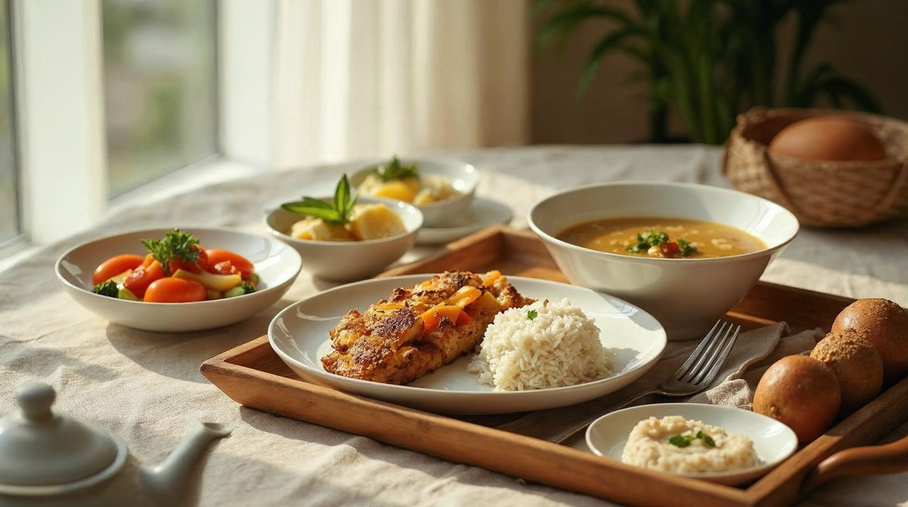
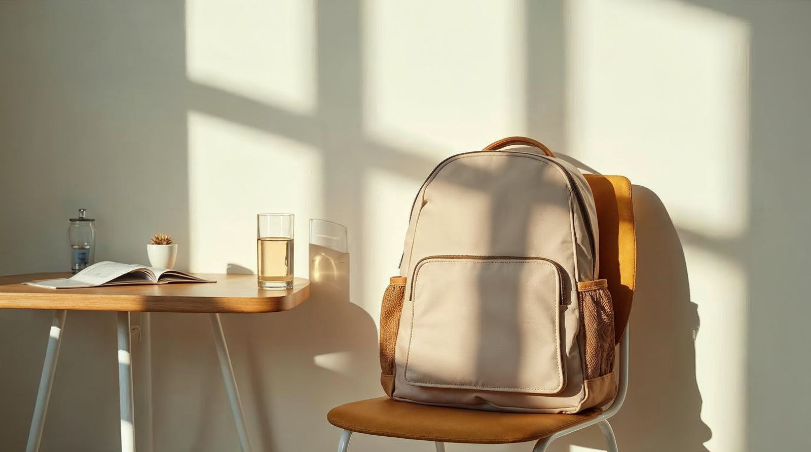

이종호 한의사 감수좋은꿈참사랑한의원 대표원장 (한의사 면허번호 19769)발행 2026-11-26 · 수정 2026-11-26
이 글의 차례
시험 기간 아침, 딸아이가 식탁에 앉지 못하고 소파에 웅크려 있습니다. 얼굴은 하얗고, 손은 아랫배를 꼭 누르고 있습니다. "오늘 생리 시작했어." 그 한마디에 보호자의 마음도 무거워집니다. 시험을 보러 가야 하는데, 아이는 몸을 펴지도 못합니다.
진료실에서 청소년 생리통 이야기를 꺼내시는 분은 대개 보호자입니다. 딸이 매달 이렇게 아픈데 원래 이런 건지, 병원에 가 봐야 하는지, 진통제를 자주 먹여도 괜찮은지 궁금해하십니다. 아이 본인은 쑥스러워 말을 아끼거나, 다들 아프다는데 참아야 한다고 생각하는 경우가 많습니다.
생리통은 흔합니다. 하지만 흔하다는 것이 참아야 한다는 뜻은 아닙니다. 학교를 빠지거나 수업에 집중하지 못할 만큼 아프다면, 그 불편을 줄이는 방법을 함께 찾아볼 충분한 이유가 됩니다.
이 시기는 몸의 리듬이 자리를 잡아 가는 때이기도 합니다. 그래서 저는 생리통만 따로 보기보다 잠, 식사, 몸의 온기, 학업 부담까지 함께 여쭙습니다. 아이가 자기 몸을 이해하고 돌보는 법을 익히는 계기가 되었으면 하는 마음입니다.
청소년 생리통은 어떤 모습인가요
청소년 생리통은 대개 생리 시작 직전이나 시작 첫날부터 아랫배가 쥐어짜듯 아프고, 하루이틀 지나면서 줄어드는 흐름을 보입니다. 허리가 묵직하거나 허벅지 안쪽까지 당기기도 하고, 메스꺼움, 설사, 두통, 어지럼이 함께 오는 경우도 있습니다.
초경 직후 1~2년은 배란이 고르지 않아 생리통이 덜하다가, 배란이 자리 잡으면서 생리통이 뚜렷해지는 경우가 많다고 알려져 있습니다. 그래서 중학교 무렵부터 생리통이 심해졌다고 말하는 아이들이 많습니다.
이렇게 자궁 자체에 뚜렷한 이상 없이 생기는 생리통을 일차성 생리통이라고 부르고, 청소년 생리통의 대부분이 여기에 해당합니다. 반면 자궁내막증처럼 다른 원인이 있어 생기는 생리통은 이차성 생리통이라고 하며, 살펴보는 방향이 달라집니다.
왜 생리통이 생길까요
생리가 시작되면 자궁 안쪽 막이 떨어져 나가면서 자궁이 수축합니다. 이때 수축을 일으키는 물질이 많이 만들어지면 자궁이 강하게 조이고, 혈관이 좁아지며 통증이 커집니다. 이 물질은 장에도 영향을 주어 설사나 메스꺼움이 함께 오기도 합니다.
- 배란이 자리 잡으면서 수축을 일으키는 물질이 늘어나는 시기
- 잠이 부족하거나 시험 기간처럼 긴장이 큰 때
- 아침을 거르거나 끼니가 불규칙한 식사
- 오래 앉아 공부하며 움직임이 적은 생활
- 아랫배와 발이 차가운 옷차림
- 가족 가운데 생리통이 심한 분이 있는 경우
이 가운데 생활에서 바꿀 수 있는 것도 꽤 있습니다. 잠과 식사, 움직임, 몸의 온기는 생리통의 크기에 영향을 줄 수 있어서, 진료실에서는 이 네 가지를 꼭 함께 살펴봅니다.
어떤 생리통은 검사가 필요한가요
대부분의 청소년 생리통은 일차성이지만, 다음과 같은 모습이 있다면 산부인과에서 한 번 확인해 보시길 권합니다. 진통제를 먹어도 거의 줄지 않는 경우, 해가 갈수록 점점 심해지는 경우, 생리 기간이 아닐 때도 아랫배가 자주 아픈 경우입니다.
생리 양이 너무 많아 한 시간에 한 번씩 패드를 갈아야 하거나, 생리가 열흘 넘게 이어지거나, 주기가 지나치게 짧거나 길게 오락가락하는 경우도 확인이 필요합니다. 어지럽고 쉽게 지친다면 빈혈이 함께 있는지도 살펴야 합니다.
청소년이 산부인과에 가는 것을 부담스러워하는 보호자와 아이가 많습니다. 하지만 청소년 진료는 대개 대화와 배 위 초음파처럼 부담이 적은 방법으로 진행되는 경우가 많으니, 미리 전화로 진료 방식을 여쭤 보고 가시면 마음이 한결 편합니다.
비슷해 보이지만 다른 불편들
생리 일주일쯤 전부터 가슴이 붓고, 짜증이 늘고, 단것이 당기고, 몸이 붓는다면 생리 전 증후군이 함께 있는 것일 수 있습니다. 생리통은 생리 시작 무렵에 아랫배가 아픈 것이 중심이라면, 생리 전 증후군은 생리 전 며칠에서 일주일 동안 몸과 마음이 함께 흔들리는 모습입니다.
생리와 생리 사이, 대략 가운데쯤에 아랫배 한쪽이 콕콕 쑤시는 것은 배란통일 수 있습니다. 하루이틀 지나면 가라앉는 경우가 많지만, 통증이 갈수록 심해지거나 열이 함께 난다면 다른 이유를 살펴봐야 합니다.
생리 날에 설사와 복통이 겹치면 장염인지 생리통인지 헷갈리기도 합니다. 생리가 끝나면 설사도 가라앉는다면 생리와 관련된 것일 가능성이 높고, 열이 나고 생리와 상관없이 이어진다면 장 쪽 문제를 먼저 확인해야 합니다.
시험과 수행평가가 겹치는 날에는
시험 날과 생리 날이 겹치면 아이도 보호자도 마음이 급해집니다. 생리 예정일을 미리 달력에 표시해 두고, 시험이 겹칠 것 같다면 그 주에는 잠과 식사를 특히 챙기는 것이 도움이 될 수 있습니다. 가방에 진통제와 여분의 패드, 작은 핫팩을 미리 넣어 두면 아이가 덜 불안해합니다.
시험 전날 밤늦게까지 공부하면 잠이 부족해져 다음 날 생리통을 더 크게 느낄 수 있습니다. 평소보다 조금 일찍 잠자리에 들고, 아침은 따뜻한 국물이나 죽처럼 속이 편한 음식으로 챙겨 주세요. 시험 중에 많이 아플 것 같다면 담임 선생님이나 보건 선생님께 미리 알려 두시는 것도 방법입니다.
진통제는 어떻게 쓰면 좋을까요
진통제를 자주 먹으면 몸에 나쁘지 않을까 걱정하시는 분이 많습니다. 생리통에 흔히 쓰는 진통제는 수축을 일으키는 물질이 만들어지는 것을 줄여 주는 약이라서, 통증이 크게 올라오기 전에 쓰는 편이 효과를 느끼기 쉽다고 알려져 있습니다.
참다가 너무 아파진 뒤에 먹으면 이미 만들어진 물질 때문에 잘 듣지 않는다고 느낄 수 있습니다. 생리 시작 신호가 오면 약 설명서나 약사의 안내에 따라 정해진 양을 지켜 드시는 것이 좋습니다. 빈속에 먹으면 속이 쓰릴 수 있으니 가볍게라도 먹은 뒤 드세요.
정해진 양을 지켜도 통증이 거의 줄지 않거나, 매달 하루 종일 약을 먹어야 할 만큼 아프다면 그것 자체가 검사를 받아 볼 신호입니다. 위가 약하거나 천식이 있는 아이는 진통제 종류를 의사나 약사와 상의해 고르시길 권합니다.
생리통을 참는 습관은 왜 살펴봐야 할까요
많은 청소년이 생리통을 혼자 참습니다. 친구들 앞에서 말하기 부끄럽고, 보건실에 가는 것도 눈치가 보이고, 다들 아프다니 나만 유난스러운 것 같다고 느끼기 때문입니다. 그렇게 참다 보면 수업에 집중하지 못하고, 생리 날이 다가올수록 미리 불안해지기도 합니다.
보호자가 먼저 생리통을 자연스러운 몸의 이야기로 꺼내 주시면 아이도 마음을 엽니다. "이번 달은 어땠어?", "약은 언제 먹었어?"처럼 가볍게 묻고, 아픈 날 쉴 수 있는 방법을 함께 정해 두는 것이 좋습니다.
학교 보건실을 쓰는 방법도 미리 알려 주세요. 생리통으로 보건실을 찾는 것은 부끄러운 일이 아니라 자기 몸을 돌보는 일이라고 말해 주시면, 아이가 혼자 견디는 시간이 조금은 줄어듭니다.

다이어트와 생리통은 어떤 관련이 있을까요
이 나이에는 외모에 마음을 많이 쓰며 끼니를 거르거나 지나치게 적게 먹는 아이들이 있습니다. 먹는 양이 크게 줄고 체중이 갑자기 빠지면 생리 주기가 흔들리고, 생리통이나 어지럼이 더 크게 느껴지기도 합니다.
반대로 밤늦게 단 간식과 야식이 잦아도 몸이 무겁고 붓는 느낌이 늘어납니다. 그래서 진료실에서는 몸무게 숫자보다 하루 세 끼를 어떻게 먹는지, 단백질과 채소를 고르게 먹는지를 함께 여쭙니다. 자라는 몸에는 충분한 영양이 먼저라는 것을 아이와 함께 이야기 나누곤 합니다.
먼저 이렇게 여쭙니다
처음 오시면 아래 질문들을 여쭙니다. 생리 기록 앱이나 달력에 적어 둔 것이 있다면 함께 보여 주세요.
- 초경은 언제 했고, 생리 주기와 기간은 어떤가요?
- 생리통은 생리 며칠 전부터, 며칠째까지 이어지나요?
- 진통제는 언제, 얼마나 드시나요?
- 생리 양은 어떤가요? 덩어리가 많이 나오나요?
- 메스꺼움, 설사, 두통, 어지럼이 함께 오나요?
- 생리통 때문에 학교를 빠지거나 조퇴한 적이 있나요?
잠과 식사, 손발 온도도 함께 여쭙니다. 아침을 거르는지, 찬 음료를 자주 마시는지, 밤늦게까지 공부하거나 휴대폰을 보는지에 따라 생리통의 모습이 달라질 수 있습니다.

일상에서 먼저 해 볼 수 있는 것
생리통을 덜기 위한 생활 관리는 생리 날뿐 아니라 그 전 일주일부터 시작하면 좋습니다. 하나씩 골라 해 보세요.
- 생리 예정일 며칠 전부터 잠드는 시각을 조금 앞당기기
- 아침을 거르지 않고, 따뜻한 음식으로 하루를 시작하기
- 아랫배와 허리, 발을 따뜻하게 하는 옷차림 챙기기
- 공부하는 중간에 일어나 가볍게 걷거나 몸 늘리기
- 생리 날에는 핫팩이나 따뜻한 물주머니를 옷 위로 대기
- 찬 음료와 단 간식, 카페인 음료는 조금 줄이기
핫팩은 맨살에 직접 대거나 잠든 채 오래 두면 저온 화상을 입을 수 있습니다. 옷 위로 대고, 피부가 붉어지면 위치를 바꿔 주세요.
움직임도 도움이 됩니다. 생리통이 심한 날은 쉬는 것이 맞지만, 평소에 걷기, 줄넘기, 스트레칭처럼 몸을 꾸준히 움직이는 아이가 생리통을 덜 느낀다는 이야기가 많습니다. 생리 날에는 누워서 무릎을 가슴 쪽으로 당기거나, 엎드려 등을 둥글게 마는 동작이 편하게 느껴질 수 있습니다.
한의원에서 함께 살필 수 있는 경우
- 산부인과에서 큰 이상은 없다는데 생리통이 매달 심한 경우
- 아랫배와 손발이 늘 차고 생리 때 더 심해지는 경우
- 생리 때마다 설사나 메스꺼움, 두통이 함께 오는 경우
- 시험 기간이나 긴장한 달에 생리통이 유난히 심해지는 경우
- 잠이 얕고 쉽게 지치며 입맛이 고르지 않은 경우
좋은꿈참사랑한의원에 오시면 먼저 아래 '먼저 확인이 필요한' 신호가 없는지부터 봅니다. 그다음 맥을 짚고 아랫배의 온기와 긴장, 잠과 소화, 생리의 흐름을 함께 살핍니다. 진찰한 내용을 바탕으로 생활 관리 안내, 침, 온열 관리, 한약 상담 가운데 지금 상태에 맞는 것을 고릅니다.
한약을 상의할 때는 아이가 먹는 약과 알레르기를 모두 확인하고 신중하게 정합니다. 산부인과 진료가 필요하다면 함께 받으시도록 안내하고, 처방받은 약은 처방한 선생님과 상의 없이 멈추지 않으시도록 합니다. 아이가 침을 무서워하면 억지로 하지 않습니다.
생리 중에 진료를 받으셔도 괜찮습니다. 오시는 날 생리 중인지, 오늘 진통제를 드셨는지 알려 주시면 그날 몸 상태에 맞춰 진료 방법을 정합니다. 편한 옷차림으로 오시면 아랫배와 허리를 살피기가 수월합니다.
이렇게 기록해 오시면 상담이 쉬워집니다
석 달 정도 생리 기록을 적어 오시면 생리통의 흐름이 훨씬 분명하게 보입니다. 휴대폰 생리 기록 앱을 써도 좋습니다.
- 생리 시작일과 끝난 날
- 생리통이 시작된 때와 가장 심했던 날, 정도(약함, 보통, 심함)
- 진통제를 먹은 시각과 양
- 생리 양과 덩어리 여부
- 함께 온 불편(설사, 메스꺼움, 두통 등)
- 그 달의 잠, 시험이나 긴장한 일
기록을 모아 보면 잠이 부족했던 달, 시험이 겹친 달, 찬 음료를 많이 마신 달처럼 생리통이 커지는 조건이 드러나곤 합니다. 그 조건을 하나씩 바꿔 가면 아이도 자기 몸의 리듬을 조금씩 이해하게 됩니다.
자기 몸을 알아 가는 시간
청소년기의 생리통은 아이가 처음으로 자기 몸의 리듬과 마주하는 경험이기도 합니다. 언제 아프고, 무엇을 하면 조금 편해지는지 스스로 알아 가는 과정은 어른이 된 뒤에도 몸을 돌보는 힘이 됩니다.
이번 달에는 생리 시작일과 통증이 가장 심했던 날, 그리고 진통제를 먹은 시각 세 가지만 아이와 함께 적어 보세요. 다음에 오시면 그 기록을 펼쳐 놓고, 잠과 식사, 몸의 온기의 흐름을 함께 짚어 보겠습니다.
이런 증상은 먼저 확인이 필요합니다
- 아랫배 한쪽이 갑자기 찢어질 듯 아프면서 식은땀이 나고 계속 토하는 경우
- 한 시간도 안 되어 패드가 흠뻑 젖을 만큼 양이 많고 어지러워 쓰러질 것 같은 경우
이런 신호가 있으면 한의원보다 가까운 병원이나 응급실을 먼저 찾으세요.
함께 읽으면 좋은 글
- 생리통이 심할 때 한의원에서는 무엇을 먼저 묻고, 언제 병원 검사가 필요한가요?
- 생리 때마다 아랫배가 차고 묵직할 때는 무엇을 먼저 살피나요?
- 생리 양이 너무 많을 때(월경과다)는 무엇을 확인하고 어떻게 살피나요?
- 월경 주기가 불규칙할 때 한의원에서는 무엇을 먼저 확인하나요?
- 생리 중에도 한의원 진료를 받을 수 있나요?

여쭙는 것
- 초경은 언제 했고, 생리 주기와 기간은 어떤가요?
- 생리통은 생리 며칠 전부터, 며칠째까지 이어지나요?
- 진통제는 언제, 얼마나 드시나요?
생활에서 해 볼 것
- 생리 예정일 며칠 전부터 잠드는 시각을 조금 앞당기기
- 아침을 거르지 않고, 따뜻한 음식으로 하루를 시작하기
- 아랫배와 허리, 발을 따뜻하게 하는 옷차림 챙기기
한의원에서 함께 살필 것
- 산부인과에서 큰 이상은 없다는데 생리통이 매달 심한 경우
- 아랫배와 손발이 늘 차고 생리 때 더 심해지는 경우
- 생리 때마다 설사나 메스꺼움, 두통이 함께 오는 경우
먼저 확인이 필요한 신호
- 아랫배 한쪽이 갑자기 찢어질 듯 아프면서 식은땀이 나고 계속 토하는 경우
- 한 시간도 안 되어 패드가 흠뻑 젖을 만큼 양이 많고 어지러워 쓰러질 것 같은 경우
한눈에 보는 표
| 구분 | 핵심 |
|---|---|
| 여쭙는 것 | 초경은 언제 했고, 생리 주기와 기간은 어떤가요? 생리통은 생리 며칠 전부터, 며칠째까지 이어지나요? |
| 생활에서 해 볼 것 | 생리 예정일 며칠 전부터 잠드는 시각을 조금 앞당기기 아침을 거르지 않고, 따뜻한 음식으로 하루를 시작하기 |
| 한의원에서 함께 살필 것 | 산부인과에서 큰 이상은 없다는데 생리통이 매달 심한 경우 아랫배와 손발이 늘 차고 생리 때 더 심해지는 경우 |
| 먼저 확인이 필요한 신호 | 아랫배 한쪽이 갑자기 찢어질 듯 아프면서 식은땀이 나고 계속 토하는 경우 한 시간도 안 되어 패드가 흠뻑 젖을 만큼 양이 많고 어지러워 쓰러질 것 같은 경우 |
자주 묻는 질문
청소년이 진통제를 매달 먹어도 괜찮을까요?
정해진 양을 지켜 생리 기간에 드시는 것은 흔히 쓰는 방법입니다. 다만 정해진 양으로도 통증이 거의 줄지 않거나 매달 하루 종일 먹어야 할 만큼 아프다면 산부인과에서 확인해 보시길 권합니다.
생리통이 심하면 꼭 산부인과에 가야 하나요?
진통제가 잘 듣지 않거나, 해마다 심해지거나, 생리 기간이 아닐 때도 아랫배가 자주 아프다면 한 번 확인해 보시는 것이 좋습니다. 청소년 진료는 대화와 배 위 초음파처럼 부담이 적은 방법으로 진행되는 경우가 많습니다.
생리 중에도 침을 맞을 수 있나요?
생리 중에도 진료를 받으실 수 있습니다. 생리 중이라는 것을 미리 알려 주시면 그날 몸 상태에 맞춰 진료 방법을 정합니다.
생리통에 좋은 음식이 따로 있나요?
특정 음식 하나보다 아침을 거르지 않고 따뜻한 음식을 고르게 먹는 습관이 중요합니다. 생리 전후에는 찬 음료와 단 간식, 카페인 음료를 조금 줄여 보세요.
아이가 생리 이야기를 부끄러워하는데 어떻게 하면 좋을까요?
보호자가 먼저 자연스러운 몸의 이야기로 꺼내 주시면 도움이 됩니다. 진료실에서도 아이가 원하면 보호자와 따로 이야기를 나눌 수 있으니 편하게 말씀해 주세요.
좋은꿈참사랑한의원은 재진 때 지난번 이야기부터 이어서 여쭙니다. 진료시간과 예약은 오시는 길에서 확인하세요.
어디서 상담받을 수 있나요?
좋은꿈참사랑한의원은 서울 동작구 만양로2길 2 신성빌딩 3층·5층(서울 동작구 상도동, 7호선 상도역 3번 출구 근처)에 있습니다. 한의사 3명(이종호 대표원장, 조영기 수석진료원장, 정원영 진료원장)이 진료합니다. 진료시간은 평일 09:30~20:00(점심 13:00~14:00), 토·일·공휴일 09:30~15:00이며, 방문 전 전화로 확인을 권합니다. 예약은 네이버 예약, 카카오톡 상담, 전화 02-815-7510로 받습니다.
이 글은 일반적인 건강 정보이며 개인의 진단이나 치료를 대신하지 않습니다. 증상이 있거나 복용 중인 약이 있다면 진료를 통해 확인하세요. 치료 효과는 개인마다 다를 수 있습니다.
작성 기준: 일반적으로 알려져 있는 건강 정보를 참고해 정리했습니다(대표원장 감수). 증상 기록은 1~2주 동안 하루 1회, 비슷한 시간에 적어 오시면 지난 상태와 비교하기 쉽습니다.